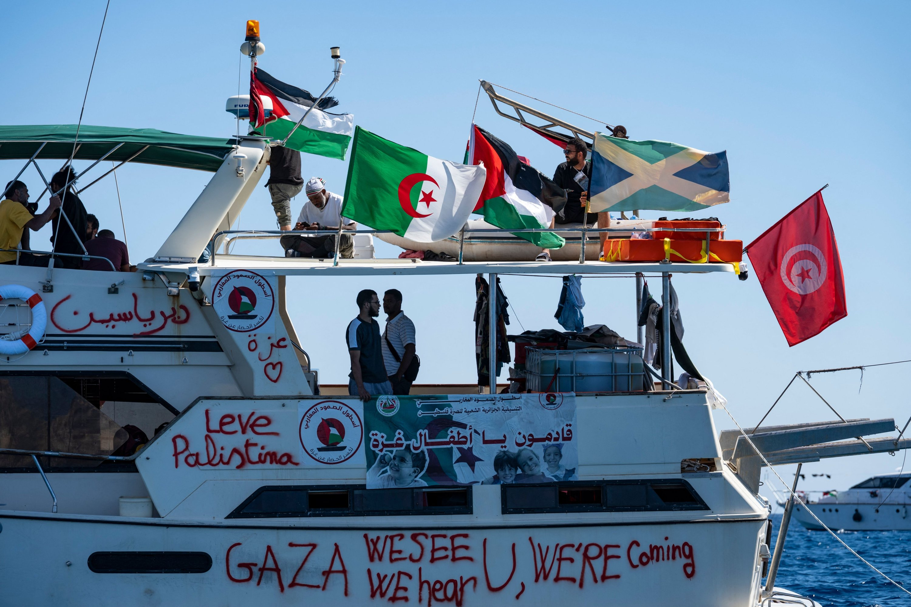

Israeli naval ships intercept Gaza-bound Global Sumud Flotilla
2025, October 9

Israeli naval ships intercept Gaza-bound Global Sumud Flotilla
2025, October 9
Israel
Israeli naval forces began intercepting the Global Sumud Flotilla on the night of October 1 about 70 nautical miles west of Gaza. By October 9 at least seven of the more than 450 people detained remain in custody, according to Israeli media reported. This flotilla is made up of civilian volunteers from various countries and aims to deliver humanitarian aid to war-torn Gaza. Israel commented the interceptions were part of a "lawful naval blockade".Witnesses quoted by Gulf News said Israeli vessels used water-cannon bursts to force boats to stop; the navy has not commented on tactics. The Polish-flagged yacht Marinette – the last vessel still transmitting – was stopped at 10:29 local time on October 3, 42.5 n mi from Gaza, according to the flotilla’s own tracker.
Israel’s Foreign Ministry said all detainees are “safe and in good health” and was arranging voluntary deportations; however, accroding to The Guardian's report on October 4, that Greta Thunberg had reported dehydration and insufficient food and water and suffered from “mistreatment” during her time in Israeli custody to officials from the Swedish Ministry of Foreign Affairs. Turkish activist Ersin Çelik and Italian journalist Lorenzo D’Agostino told Al Jazeera and Euronews that soldiers dragged Thunberg by her hair, draped an Israeli flag over her and took selfies – allegations the Foreign Ministry dismissed as “brazen lies”.
Diplomatic fallout widened after the first interceptions: Colombia expelled Israel’s diplomatic delegation and suspended a free-trade agreement on October 1, while Turkey’s Foreign Ministry dubbed the raid “an act of piracy” on October 3. On October 4, One of Italy’s largest unions, Confederazione Generale Italiana del Lavoro along with the grassroots Unione Sindicale di Baseetc etc, has organized more than 2 million people across Italy rallied in over 100 cities for a one-day general strike, at the same time ten of thousands people marched in Barcelona.
On October 8, another humanitarian flotilla was intercepted. The Freedom Flotilla Coalition (FFC) announced that a Gaza aid flotilla it organized was intercepted by Israeli forces at sea, including one ship from Global Sumud Flotilla("Conscience"). The Israeli Ministry of Foreign Affairs confirmed that approximately 150 passengers on board had been transferred to an Israeli port and would be promptly deported.
The Turkish parliament unanimously passed a motion on October 8, condemning Israel's "attack on Turkish parliamentarians and citizens" and demanding the immediate release of the relevant personnel, because there are many Turkish citizens and three Turkish parliamentarians on board the "Conscience".